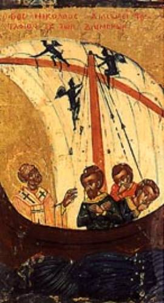

St. Nicholas and the Miraculous Trip Back from the Holy Land
Nicholas hoped to withdraw into the wilderness, but he was stopped by God’s voice, urging him to return to his native country. Nicholas went from ship to ship in the port asking to be taken back right away. One boat was just being loaded, and the captain said, “We’ll go wherever our fare asks us to go.” Nicholas answered that he’d pay to be taken directly to Patara in Lycia. Their agreement was a pretense; they planned on stopping over at their own home port on the way, where they could sell Nicholas into slavery.
There was a fair wind, and they set sail, but not directly toward Patara. St. Simeon Metaphrastes wrote that God “did not want to have the Saint suffer any delay or disappointment, and so He raised a violent storm that caused the ship’s rudder to be damaged beyond repair.”
The frightened sailors pleaded with Nicholas to pray
for their safety. He agreed and knelt on the deck to pray as the storm tossed
the ship. When he extended his arms in prayer, the sea became calm.
As a result of the damage, the boat drifted
rudderless across the sea, seemingly at the mercy of every wave and every gust
of wind. The sailors feared that they’d just drift until they died from lack of
food and water.
Unknown to the sailors, the Lord had the boat drifting
quite purposefully in a specific direction. On and on for many miles it moved.
At last, they saw land, and the boat moved closer to shore. The captain and
crew were awed to discover that the ship, far from drifting aimlessly, had
taken them directly to Patara where Nicholas had wanted them to go in the first
place!
Overwhelmed by the dual miracle of their own
survival and the safe arrival at Nicholas’ destination, they asked his
forgiveness. He told them kindly but firmly, “From now on, don’t try to fool
anyone.” Then he asked them to repair their boat’s rudder, be on their way, and
have a good journey home.
St. Simeon Metaphrastes ended his account of this
eventful pilgrimage as follows:
“And thus the Saint returned to his homeland. I
cannot tell you with what joy his fellow countrymen greeted him, how pleased
they were to see him again. Young and old, men and women, everyone came to meet
him. Among them were the monks of the monastery of New Zion which his uncle had
earlier let him administer. The Saint met them, speaking the words of
the Lord and teaching the way of salvation for Christian souls.
“In this manner, the Saint was respected and loved
by all. As people observed his goodness, many followed his example and
teachings. They scorned a material, transient existence and placed their trust
in the Eternal. Being humble, the Saint sought to avoid men’s praises, but once
again he could not hide his virtues, as they were God-given and served all
those who followed his guidance.”
The pilgrimage, the miraculous events on the two sea
journeys, and the welcome Nicholas received upon returning home, marked the end
of his young manhood. Yearning for a life of quietude, Nicholas returned to the
brotherhood of his uncle’s monastery. God, however, had other plans in mind.
To make sure that Nicholas got the point, the Lord
spoke to him in a vision. In the vision, Nicholas saw Jesus Christ standing
before him in all His glory and giving him a Gospel ornamented with gold and
pearls. On the other side of himself Nicholas saw the Virgin Mary who placed on
his shoulders the omophorion. The
Lord told Nicholas that not the monastery but another pathway was awaiting him:
“Nicholas, this is not the field on which you ought to
await My harvest, but rather turn round and go into the world, and there My
Name shall be glorified in you.”
Thought to Ponder: Adam of St. Victor (d.
1192), Canon of the monastery of St. Victor in Paris, author of the famous “Sequences,”
wrote a hymn in honor of St. Nicholas. It alluded to his miraculously calming
the storm, and went on to ask the Saint to lead us to the harbor of salvation
in Jesus Christ, and save us from shipwreck in this world of sin.
Thought to Discuss around the Dinner Table: In our dealings with others, do they see us as remote, aloof, or too pious to get our hands dirty? Or do they feel comfortable approaching us for help, that we might help where we can and point them to Jesus?
Did You Know? The Normans were great sailors, and on their
voyages they invoked the Saint who had appeared to sailors in danger and saved
them from shipwreck. The habit of praying to him spread all along the coasts of
Northern Europe. William the Conqueror was to pray to him during a storm that
arose while he was crossing the English Channel.
St. Nicholas and the Miraculous Trip Back from the Holy Land
